晒童书——产品需求文档
背景
0~14儿童对于读书需求强烈，读书速度快，几天就能读完一本书，读书量大，家长甚至每星期都会给孩子购买新书，孩子喜欢读书是一件非常好的事，但这个过程产生了一个问题，"图书闲置"，孩子读完一本书后立即就转向了下一本书，很少会再去打开它，随着时间的推移，图书价值越来越低，闲置量也会越来越大。
1.产品概况
1.1 产品介绍
如果能够帮助家长，把这些闲置的图书，拿出来去和别的家长交换就能得到一本新书。而晒童书就是这样的平台，去帮助家长和孩子共享（晒）自己的闲置图书通过交换规则得到一本自己想看但没看过的书，让闲置的图书动起来。
1.2 产品定位
通过"晒"的方式，让闲置的图书动起来。
1.3 目标用户
0~14岁儿童，家长。
1.4 需求分析
| 主体 | 场景 |
|---|---|
| 0~14儿童、家长 | 孩子读书需求强烈，图书闲置率高 |
| 可能遇到的问题 | 产生的原因 | 目前的解决方式 |
|---|---|---|
| 需要经常买书 | 孩子读书量大 | 不断的买书 |
| 图书闲置 | 孩子读书太快 | 任其闲置 |
1.5 需求梳理
| 问题 | 晒童书解决方案 |
|---|---|
| 如何分享图书 | 通过晒童书平台发布得到与书相对应的积分 |
| 如何得到图书 | 使用发布图书得到的积分去换置图书 |
| 图书的质量 | 工作人员审核图书内容及新旧程度（残缺，污渍，异味） |
| 图书的卫生 | 审核通过后，进行臭氧消毒并过塑处理 |
| 换书地点 | 以学习为单位 |
| 交换方式 | 前期在学校设立定期人工点，后期使用智能柜 |
| 图书管理及跟踪 | 消毒过塑后，贴上内部条形码 |
| 前期平台无图书 | 购买5000本图书发布到平台上 |
2. 产品架构及业务流程
2.1 信息架构图
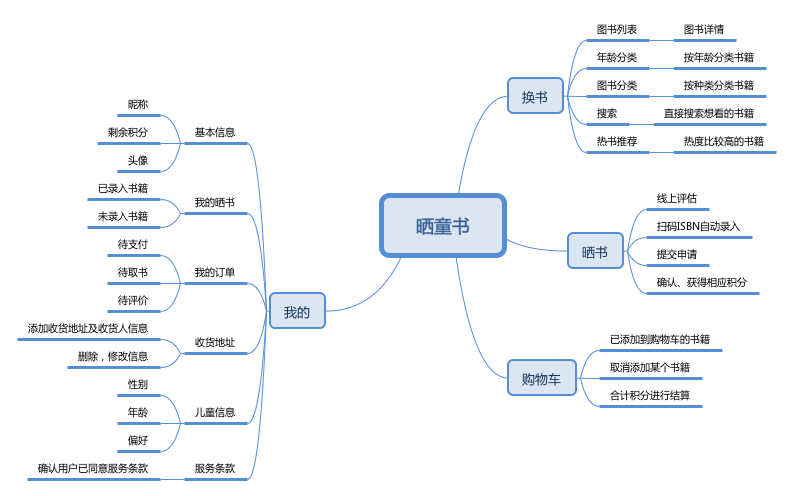2.2 业务流程图
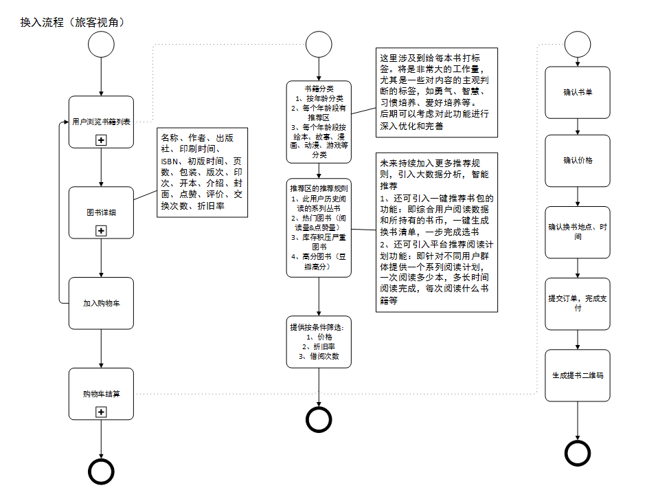 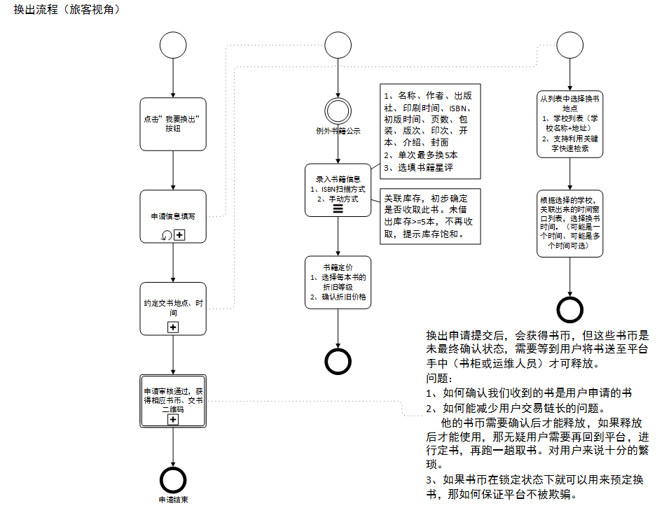 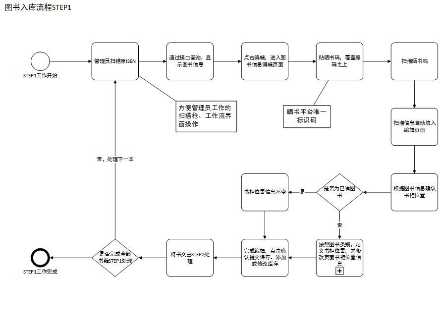 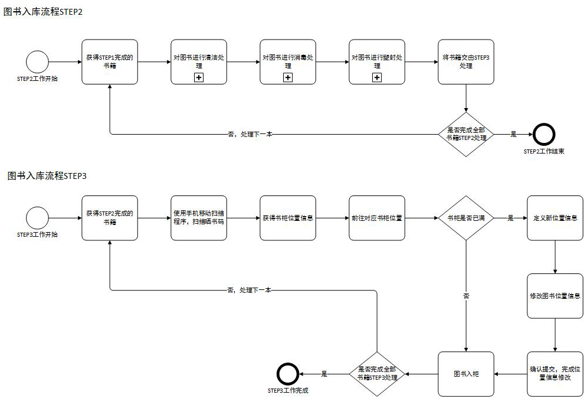 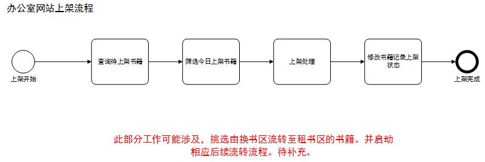 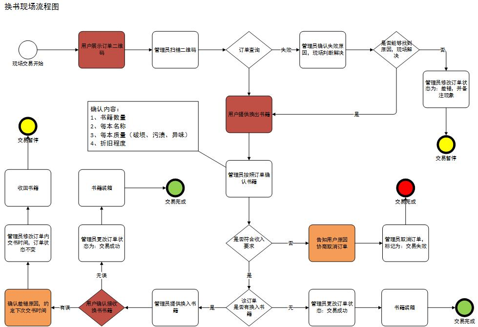3. 技术实现
| 实现方式 | 优点 | 缺点 |
|---|---|---|
| APP |
1.用户体验优 2.功能丰富 |
1.开发推广成本高 2.周期长 |
| WEB |
1.功能丰富 2.开发灵活 |
用户体验差 |
| 小程序 |
1.开发推广成本低 2.使用简单，无需下载 3.用户体验良好 |
功能有限制 |
综合考虑前期使用小程序开发，周期短，便于推广，成本低。
4. 全局说明
4.1 功能权限
4.1.1首次登录
提示家长，选择孩子所在学校，系统自动推荐该学校内的书。
*未选择学校，将根据手机定位，自动定位到最近的学校。
提示家长，完善儿童信息，精准推荐书籍。
*可以跳过此步骤，用户后期可在 我的--儿童信息 ，继续完善。
4.1.2首次换书
提示用户，阅读并勾选服务协议，未勾选不可以进行换书流程。
提示用户先晒书获得积分再来换书，或者直接购买积分。1REM=1分
4.1.3晒书
通过三次提示，用形象的方式让用户了解，书籍是否符合标准要求。
通过扫码书籍ISBN码，系统自动录入图书信息，并算出告知用户可以得到的积分。
每次晒书不超过4本。
4.1.4 首次支付
提示用户设置支付密码，否则无法支付。
4.2 交互说明
扫码二维码，手机体验晒童书原型
https://free.modao.cc/app/
点击链接，PC端体验晒童书原型
4.2.1 首页
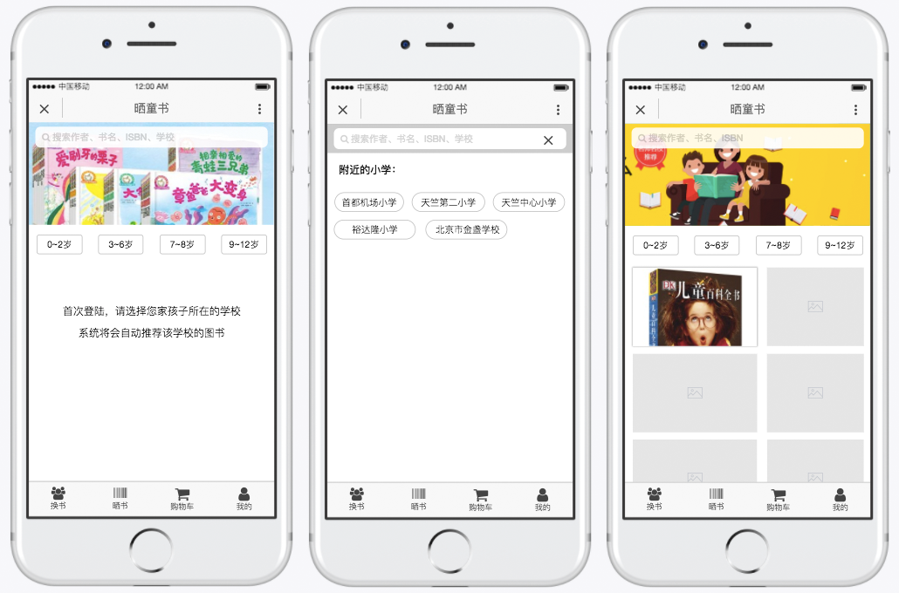
1.提示用户通过搜索框选择学校
2.自动定位附近学校，并推荐不超过6个学校方便用户直接选取
3.选择完学校后，自动加载该学校的书籍
4.搜索框，可以直接搜索学校，书名、作者
5.轮播图每周推荐三本好书
6.按年龄划分图书种类
7.导航ICON 设计时需要两种状态，常规状态和被选中状态
8.页面切换动效规则，进入下一级，下级页面向左划入，返回上一级，上级页面向右划入
4.2.2书籍详情页
1.用2~5张书籍图片构成轮播图
2.书籍名称后加上 [1-2岁] 字样，帮助用户快速判断筛选图书
3.详情文字，包括作者和书籍简介，文字超过两行自动隐藏，点击显示完整段落
4.换购此书需要多少积分，用最直观并合理的视觉设计展现
5.点击 加入购物车按钮后，提示 "添加购物车成功~"
6.加入购物车按钮，设计时需要考虑三种状态，未按下状态，按下状态，已按下状态
4.2.3 晒书
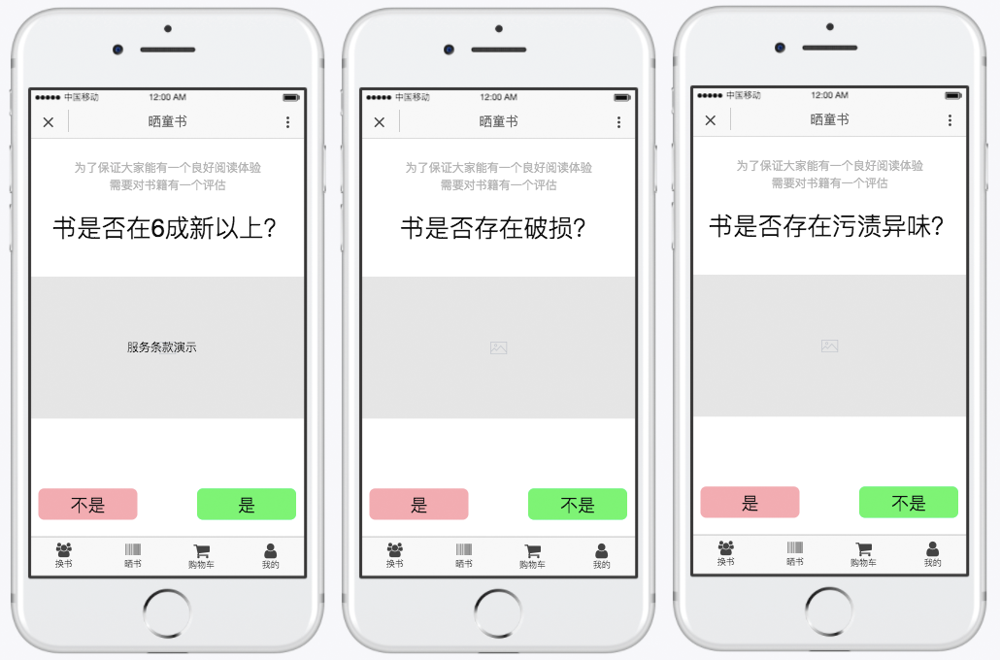
1.通过图书小动画演示加问答形式，形象的让用户理解并评估书籍是否符合要求
2.第一个要求，书是否在6成新以上，明显旧的书不符合要求
3.第二个要求，书是否存在破损，封面、内页，有破损，会影响阅读体验
4.第三个要求，书是否存在污渍异味，污渍会影响阅读的完整性，异味会引起生理不适
5. 用户做完三个问答以后，进入扫码页面，提示用户将二维码放入框内，点击取消则返回到，问答3页面，点击完成则进去下一个页面，并自动添书籍到列表中，显示书籍基本信息书名、作者、定价，并提示用户可相对应获得的积分
6. 点击继续扫描，返回扫描页，最大添加4本书，加入动效，让从点击到切换这个过程尽量柔和不生硬
7. 点击完成，进入下一个页面
8. 提示用户，选取领取时间，前期每周两天定点收书换书
9. 使用缩略图，提示用户录入了哪些书，共几本，将获得总计多少的积分
10. 确认完成功，提示申请成功，并向告知用户交书地点、时间、交书码，如果用户关掉了这个页面，还可以在 我的 - 我的晒书 中找到
4.2.4 购物车
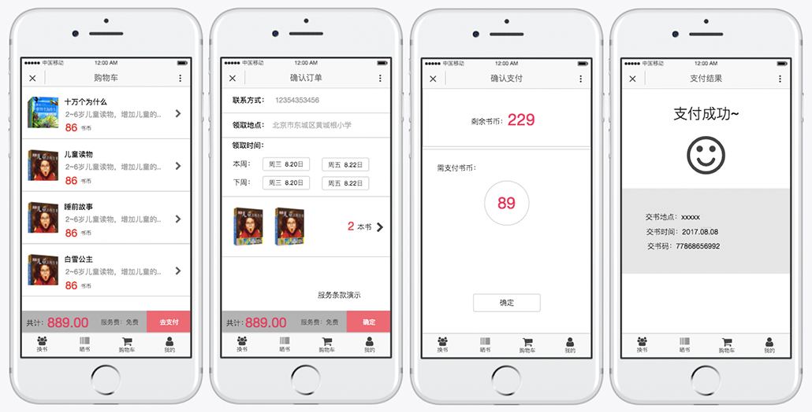
1. 显示用户添加到购物车的书籍，长按某个书籍可删除，购物车最多放4本书
2. 展示每本书的基本信息，书名，作者，缩略图，并合计需要花费的积分
3. 点击去支付后，进入确认订单页，再次点确认，进入确认支付页面
4. 确认支付页面显示，用户剩余的积分，和本次需要花费的积分，点确认跳进入下一级
5. 支付成功页面，需要形象的传达出一种高兴的氛围，并告知用户取书地点、时间，取书码
4.2.5 我的-个人中心
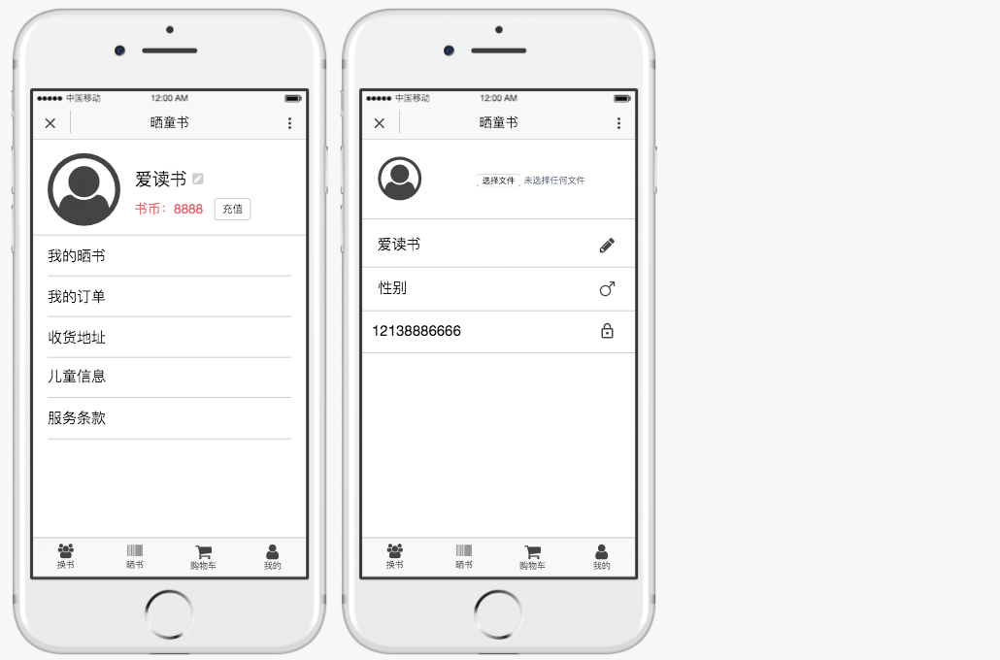
1. 显示基本信息，头像，昵称，积分，点击昵称后的按钮进入基本信息修改页面，包括头像的图片文件上传，昵称，性别，联系方式，支付密码修改
2. 头像默认调取微信头像，图片大小限制在100k内，最大尺寸为500*500px，不是正方形图片将会裁剪或让用户自己拖动选择裁剪。
3. 支付密码为6位，修改时需要输入一遍旧密码，输出正确，再设置新密码，并再确认输入一次
1. 我的晒书，包含已完成、带收录两种状态的图书，一个订单本书时有，订单号、时间、书名、定价、换购的积分，多本书时，显示订单号、只显示图书缩略图，共计几本书，一共获得的积分、时间
2. 我的订单，包含待支付、待取书、待评价三种状态，一个订单本书时显示，订单号、时间、书名、花费的积分，多本书时，显示订单号、只显示图书缩略图，共计几本书，一共花费的积分、时间
3. 收货地址，包含收货人姓名，手机号，详细地址，可添加、编辑和删除